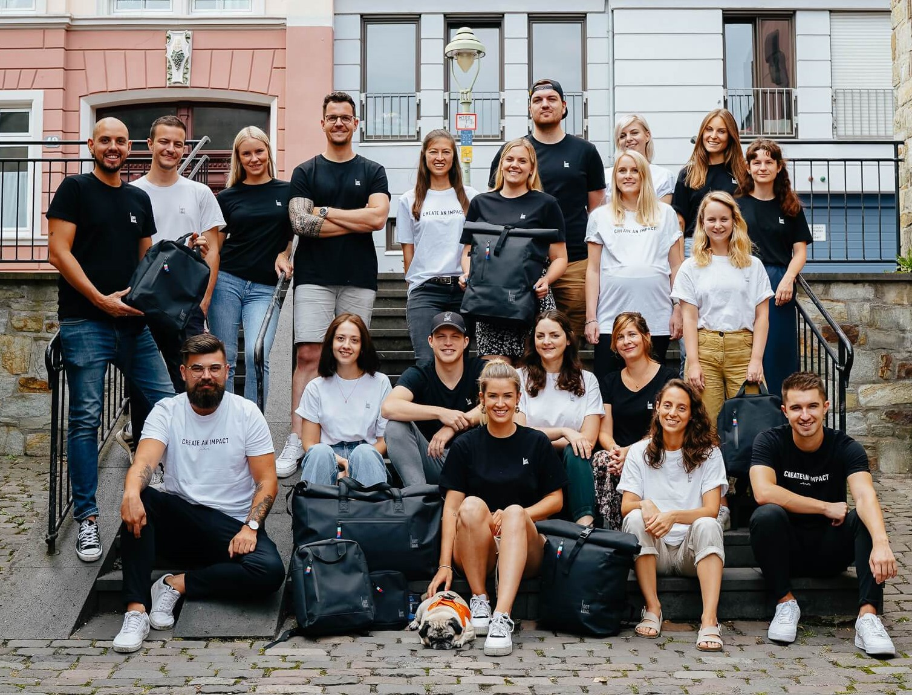
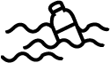
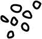
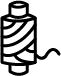
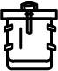

Weltweit erster Rucksack aus Meeresplastik
Willkommen bei got bag
Zum ProduktFür eine plastikfreie Zukunft der Meere
Als junges Mainzer Start-Up gehen wir seit 2016 jede Extrameile, um aus Meeresplastik nachhaltige und langlebige Rucksäcke herzustellen. Mit jedem GOT BAG trägst du zu einer positiven Veränderung bei und gemeinsam schaffen wir ein kollektives Bewusstsein für die Plastikverschmutzung.
 Erfahre mehr über #Team Got BagWie aus Müll ein Schatz wird
-
1
Das Meeresplastik wird von Fischern in Indonesien als Beifang gesammelt.
-
2
Der PET-Anteil wird gereinigt und in Pellets weiterverarbeitet. Die verbliebenen Reste werden über die entsprechende Wertschöpfungskette recycelt.
-
3
Aus dem Meeresplastik wird ein hochwertiges Garn hergestellt.
-
4
Aus dem Garn entsteht das Gewebe, das zur Herstellung deines GOT BAG verwendet wird.
Create an impact.
Wir sind ein junges Start-up aus Mainz mit einer großen Vision: Unsere Meere von der Plastikverschmutzung zu befreien.